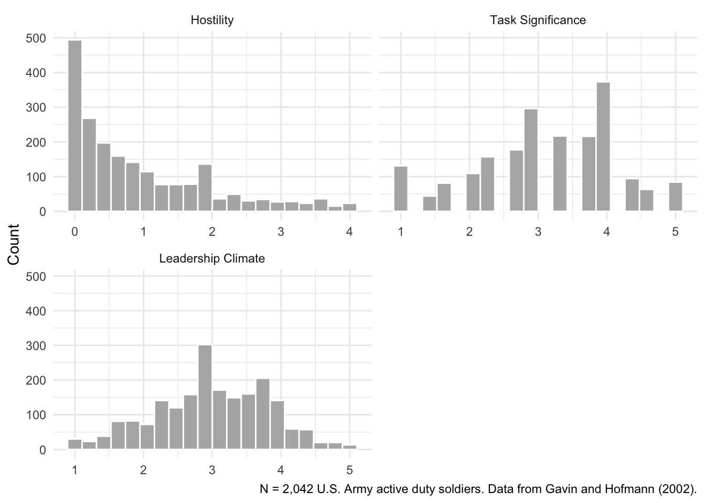

5 Conditional Random Intercept Models
Data for this chapter: lq2002.csv
This week, we are going to use data from Gavin and Hofmann (2002), a study on organizational climate and attitudes published in Leadership Quarterly. Here, we have individual soldiers nested within companies. This is the same dataset that Garson uses in Chapter 6, so you can recreate his analysis.
The structure is the same as students within schools, which is a useful reminder that multilevel modeling is not about education specifically. Anywhere individuals are grouped, these methods apply.
5.1 Load some packages to help with the analysis and data management
5.2 Load and explore the data
Rows: 2,042
Columns: 28
$ ROWID <dbl> 1, 2, 3, 4, 5, 6, 7, 8, 9, 10, 11, 12, 13, 14, 15, 16, 17, 18…
$ COMPID <dbl> 2, 2, 2, 2, 2, 2, 2, 2, 2, 2, 2, 2, 2, 2, 2, 2, 2, 2, 2, 2, 2…
$ SUB <dbl> 1, 2, 3, 4, 5, 6, 7, 8, 9, 10, 11, 12, 13, 14, 15, 16, 17, 18…
$ LEAD01 <dbl> 2, 4, 4, 1, 1, 2, 3, 3, 3, 4, 2, 2, 4, 4, 1, 2, 4, 4, 4, 4, 4…
$ LEAD02 <dbl> 2, 4, 4, 1, 1, 3, 2, 3, 4, 3, 4, 3, 4, 4, 1, 1, 5, 4, 5, 4, 2…
$ LEAD03 <dbl> 2, 2, 2, 1, 1, 2, 2, 2, 3, 3, 1, 1, 4, 4, 1, 2, 3, 4, 1, 4, 2…
$ LEAD04 <dbl> 3, 4, 4, 1, 1, 4, 1, 4, 2, 4, 3, 1, 4, 4, 1, 4, 5, 4, 1, 5, 1…
$ LEAD05 <dbl> 2, 4, 2, 1, 3, 2, 2, 2, 3, 3, 1, 2, 4, 4, 1, 3, 3, 4, 1, 2, 2…
$ LEAD06 <dbl> 2, 4, 4, 1, 2, 4, 2, 2, 3, 4, 3, 4, 4, 4, 1, 3, 5, 4, 4, 2, 2…
$ LEAD07 <dbl> 5, 4, 4, 4, 1, 3, 2, 2, 3, 3, 3, 1, 4, 3, 1, 5, 3, 4, 1, 3, 2…
$ LEAD08 <dbl> 5, 4, 4, 2, 1, 4, 2, 4, 1, 4, 4, 3, 4, 4, 1, 2, 5, 4, 1, 3, 2…
$ LEAD09 <dbl> 5, 4, 4, 3, 1, 2, 3, 2, 3, 3, 2, 2, 4, 4, 1, 4, 1, 4, 1, 4, 2…
$ LEAD10 <dbl> 5, 4, 4, 3, 1, 4, 4, 2, 2, 4, 3, 2, 4, 4, 1, 2, 5, 4, 4, 4, 1…
$ LEAD11 <dbl> 4, 3, 2, 2, 1, 3, 2, 4, 3, 3, 2, 1, 4, 4, 1, 2, 4, 4, 1, 4, 2…
$ TSIG01 <dbl> 1, 3, 5, 1, 4, 4, 2, 2, 4, 4, 3, 3, 4, 4, 1, 1, 4, 4, 1, 5, 1…
$ TSIG02 <dbl> 5, 4, 5, 3, 4, 4, 4, 2, 3, 4, 4, 3, 4, 4, 1, 5, 4, 4, 5, 5, 4…
$ TSIG03 <dbl> 5, 3, 5, 2, 4, 4, 4, 4, 4, 4, 3, 3, 4, 4, 1, 4, 5, 4, 5, 5, 4…
$ HOSTIL01 <dbl> 0, 3, 1, 2, 2, 0, 2, 0, 0, 1, 1, 2, 0, 0, 4, 3, 1, 0, 4, 3, 4…
$ HOSTIL02 <dbl> 0, 2, 0, 1, 0, 0, 0, 0, 4, 0, 0, 2, 0, 0, 4, 0, 0, 0, 0, 1, 4…
$ HOSTIL03 <dbl> 0, 0, 0, 3, 0, 0, 1, 0, 4, 0, 0, 0, 0, 0, 4, 0, 0, 0, 4, 2, 2…
$ HOSTIL04 <dbl> 0, 0, 0, 3, 0, 0, 1, 0, 4, 0, 0, 1, 0, 0, 4, 0, 0, 0, 4, 3, 2…
$ HOSTIL05 <dbl> 0, 1, 1, 0, 0, 0, 0, 0, 4, 0, 0, 2, 0, 0, 2, 0, 0, 0, 4, 2, 3…
$ LEAD <dbl> 3.363636, 3.727273, 3.454545, 1.818182, 1.272727, 3.000000, 2…
$ TSIG <dbl> 3.666667, 3.333333, 5.000000, 2.000000, 4.000000, 4.000000, 3…
$ HOSTILE <dbl> 0.0, 1.2, 0.4, 1.8, 0.4, 0.0, 0.8, 0.0, 3.2, 0.2, 0.2, 1.4, 0…
$ GLEAD <dbl> 2.882576, 2.882576, 2.882576, 2.882576, 2.882576, 2.882576, 2…
$ GTSIG <dbl> 3.541667, 3.541667, 3.541667, 3.541667, 3.541667, 3.541667, 3…
$ GHOSTILE <dbl> 1.0416667, 1.0416667, 1.0416667, 1.0416667, 1.0416667, 1.0416…Remember our old friend describe from the psych package a few weeks ago? This is a great way to get a detailed summary of all the variables in a dataset.
psych::describe(lq2002,
fast = TRUE) vars n mean sd median min max range skew kurtosis
ROWID 1 2042 1021.50 589.62 1021.50 1.00 2042.00 2041.00 0.00 -1.20
COMPID 2 2042 28.73 14.15 29.00 2.00 58.00 56.00 0.00 -0.84
SUB 3 2042 1021.50 589.62 1021.50 1.00 2042.00 2041.00 0.00 -1.20
LEAD01 4 2042 3.08 1.12 3.00 1.00 5.00 4.00 -0.27 -0.76
LEAD02 5 2042 3.35 1.10 4.00 1.00 5.00 4.00 -0.51 -0.56
LEAD03 6 2042 2.59 1.19 3.00 1.00 5.00 4.00 0.13 -1.04
LEAD04 7 2042 2.77 1.31 3.00 1.00 5.00 4.00 -0.01 -1.28
LEAD05 8 2042 2.90 1.11 3.00 1.00 5.00 4.00 -0.23 -0.64
LEAD06 9 2042 3.41 1.03 4.00 1.00 5.00 4.00 -0.62 0.11
LEAD07 10 2042 2.86 1.19 3.00 1.00 5.00 4.00 -0.17 -0.98
LEAD08 11 2042 3.35 1.08 4.00 1.00 5.00 4.00 -0.71 -0.17
LEAD09 12 2042 2.67 1.20 3.00 1.00 5.00 4.00 0.02 -1.08
LEAD10 13 2042 3.14 1.16 3.00 1.00 5.00 4.00 -0.52 -0.72
LEAD11 14 2042 2.88 1.17 3.00 1.00 5.00 4.00 -0.17 -0.98
TSIG01 15 2042 2.81 1.26 3.00 1.00 5.00 4.00 -0.07 -1.18
TSIG02 16 2042 3.28 1.16 3.50 1.00 5.00 4.00 -0.52 -0.54
TSIG03 17 2042 3.31 1.13 4.00 1.00 5.00 4.00 -0.57 -0.40
HOSTIL01 18 2042 1.49 1.39 1.00 0.00 4.00 4.00 0.53 -1.00
HOSTIL02 19 2042 0.62 1.10 0.00 0.00 4.00 4.00 1.84 2.43
HOSTIL03 20 2042 1.09 1.43 0.00 0.00 4.00 4.00 1.01 -0.46
HOSTIL04 21 2042 0.92 1.37 0.00 0.00 4.00 4.00 1.27 0.16
HOSTIL05 22 2042 0.61 1.04 0.00 0.00 4.00 4.00 1.81 2.52
LEAD 23 2042 3.00 0.82 3.00 1.00 5.00 4.00 -0.21 -0.32
TSIG 24 2042 3.13 1.02 3.33 1.00 5.00 4.00 -0.38 -0.47
HOSTILE 25 2042 0.95 1.04 0.60 0.00 4.00 4.00 1.20 0.55
GLEAD 26 2042 3.00 0.27 2.98 2.38 3.74 1.36 0.36 0.34
GTSIG 27 2042 3.13 0.32 3.12 2.54 3.78 1.24 0.16 -1.05
GHOSTILE 28 2042 0.95 0.28 0.91 0.22 1.52 1.31 0.15 -0.71
se
ROWID 13.05
COMPID 0.31
SUB 13.05
LEAD01 0.02
LEAD02 0.02
LEAD03 0.03
LEAD04 0.03
LEAD05 0.02
LEAD06 0.02
LEAD07 0.03
LEAD08 0.02
LEAD09 0.03
LEAD10 0.03
LEAD11 0.03
TSIG01 0.03
TSIG02 0.03
TSIG03 0.03
HOSTIL01 0.03
HOSTIL02 0.02
HOSTIL03 0.03
HOSTIL04 0.03
HOSTIL05 0.02
LEAD 0.02
TSIG 0.02
HOSTILE 0.02
GLEAD 0.01
GTSIG 0.01
GHOSTILE 0.01Writing psych::describe() rather than just describe() is a small habit worth adopting. Several packages define a function by that name, and the package::function() form says exactly which one you mean. If you have Hmisc loaded, as we did last week, the unqualified version may not be the one you expect.
The variables we care about are HOSTILE (a hostility scale score, our outcome), TSIG (task significance), LEAD (leadership climate), and COMPID (company, our clustering variable). The variables beginning with G are group-level aggregates, which matter later in this chapter.
5.3 Verifying a group-level aggregate by hand
GTSIG, the company average of task significance, is already sitting in the data as a column. Before you trust it — or build your own version of it on a dataset that doesn’t hand you one — it’s worth seeing exactly what it is: a mean, computed within each company and copied back onto every row in that company.
# A tibble: 6 × 3
COMPID GTSIG gtsig_check
<dbl> <dbl> <dbl>
1 2 3.54 3.54
2 3 3.47 3.47
3 4 3.43 3.43
4 5 3.71 3.71
5 6 2.69 2.69
6 7 3.18 3.18group_by() tells R which rows belong together, mutate() computes the mean within each group and writes it back onto every row in that group, and ungroup() removes the grouping so later steps don’t keep operating group-by-group without your noticing. gtsig_check matches GTSIG to within rounding error — confirmation that a group-level aggregate is nothing more exotic than this.
5.4 Visualizing the key variables
Let’s take a look at some of the key variables for our analysis. We have three variables, all of which are scale scores constructed just like the example above.
lq2002 %>%
select(HOSTILE, TSIG, LEAD) %>%
pivot_longer(everything(), names_to = "variable", values_to = "value") %>%
mutate(variable = factor(variable,
levels = c("HOSTILE", "TSIG", "LEAD"),
labels = c("Hostility", "Task Significance", "Leadership Climate"))) %>%
ggplot(aes(x = value)) +
geom_histogram(bins = 20, fill = "grey70", color = "white") +
facet_wrap(~ variable, scales = "free_x", nrow = 2) +
labs(x = NULL, y = "Count",
caption = "N = 2,042 U.S. Army active duty soldiers. Data from Gavin and Hofmann (2002).") +
theme_minimal()
Notice the shape of the hostility distribution in the leftmost panel. It piles up near the low end, which is what you would expect for a measure where most people report very little of the thing. That floor will matter when we interpret coefficients later, because there is limited room to move downward.
5.5 Running the multilevel models
5.5.1 Step one: the null model
Attaching package: 'lmerTest'The following object is masked from 'package:lme4':
lmerThe following object is masked from 'package:stats':
stepLinear mixed model fit by maximum likelihood . t-tests use Satterthwaite's
method [lmerModLmerTest]
Formula: HOSTILE ~ (1 | COMPID)
Data: lq2002
AIC BIC logLik -2*log(L) df.resid
5888.9 5905.8 -2941.5 5882.9 2039
Scaled residuals:
Min 1Q Median 3Q Max
-1.3826 -0.7294 -0.3230 0.5086 3.1628
Random effects:
Groups Name Variance Std.Dev.
COMPID (Intercept) 0.05765 0.2401
Residual 1.01668 1.0083
Number of obs: 2042, groups: COMPID, 49
Fixed effects:
Estimate Std. Error df t value Pr(>|t|)
(Intercept) 0.90632 0.04308 47.30598 21.04 <2e-16 ***
---
Signif. codes: 0 '***' 0.001 '**' 0.01 '*' 0.05 '.' 0.1 ' ' 1The (1|COMPID) term is what makes this multilevel. Everything else follows from it.
5.5.1.1 Post-estimation task: calculate ICC
Here’s a quick and easy way to get our friend the ICC!
null.ICC <- 0.05765/(0.05765 + 1.01668)
null.ICC[1] 0.05366135Note how much smaller this is than the ICC we found for schools and math achievement in the last chapter. That is substantively interesting rather than a problem. Soldiers’ hostility is mostly an individual matter, with companies accounting for a modest share of the variation.
A small ICC does not mean you should abandon multilevel modeling. It still corrects the standard errors, and it still lets you ask questions about company-level predictors, which is exactly where this chapter is heading.
Doing that arithmetic by hand once is worth it, because it shows you exactly what an ICC is: a ratio of variance components. Going forward, performance::icc() will do it for you directly from the fitted model, which is faster and less error-prone once you trust the concept.
performance::icc(model.0)# Intraclass Correlation Coefficient
Adjusted ICC: 0.054
Unadjusted ICC: 0.054
5.5.1.2 Using lmerTest to evaluate random effects
lmerTest::ranova(model.0)ANOVA-like table for random-effects: Single term deletions
Model:
HOSTILE ~ 1 + (1 | COMPID)
npar logLik AIC LRT Df Pr(>Chisq)
<none> 3 -2941.5 5888.9
(1 | COMPID) 2 -2970.2 5944.3 57.4 1 3.556e-14 ***
---
Signif. codes: 0 '***' 0.001 '**' 0.01 '*' 0.05 '.' 0.1 ' ' 1This performs a likelihood ratio test comparing the model with and without the company random effect — the same comparison the ICC hinted at above, now made formal. A significant result means companies differ enough on hostility that the clustering is worth modeling explicitly.
5.5.2 Step two: adding a level-one predictor, TSIG
Linear mixed model fit by maximum likelihood . t-tests use Satterthwaite's
method [lmerModLmerTest]
Formula: HOSTILE ~ TSIG + (1 | COMPID)
Data: lq2002
AIC BIC logLik -2*log(L) df.resid
5668.4 5690.9 -2830.2 5660.4 2038
Scaled residuals:
Min 1Q Median 3Q Max
-1.9601 -0.7135 -0.2688 0.4734 3.4848
Random effects:
Groups Name Variance Std.Dev.
COMPID (Intercept) 0.02817 0.1678
Residual 0.91938 0.9588
Number of obs: 2042, groups: COMPID, 49
Fixed effects:
Estimate Std. Error df t value Pr(>|t|)
(Intercept) 1.96574 0.07574 566.72651 25.95 <2e-16 ***
TSIG -0.33180 0.02145 1995.20590 -15.47 <2e-16 ***
---
Signif. codes: 0 '***' 0.001 '**' 0.01 '*' 0.05 '.' 0.1 ' ' 1
Correlation of Fixed Effects:
(Intr)
TSIG -0.894The coefficient for TSIG describes how hostility differs between two soldiers who differ by one unit in task significance. Because TSIG varies both within companies and between them, this single estimate blends two different comparisons. We separate them in step five.
5.5.3 Step three: adding an additional level-one predictor, LEAD
Linear mixed model fit by maximum likelihood . t-tests use Satterthwaite's
method [lmerModLmerTest]
Formula: HOSTILE ~ TSIG + LEAD + (1 | COMPID)
Data: lq2002
AIC BIC logLik -2*log(L) df.resid
5540.7 5568.9 -2765.4 5530.7 2037
Scaled residuals:
Min 1Q Median 3Q Max
-2.3574 -0.6918 -0.2278 0.5180 3.4823
Random effects:
Groups Name Variance Std.Dev.
COMPID (Intercept) 0.02028 0.1424
Residual 0.86544 0.9303
Number of obs: 2042, groups: COMPID, 49
Fixed effects:
Estimate Std. Error df t value Pr(>|t|)
(Intercept) 2.56714 0.08847 923.85117 29.017 < 2e-16 ***
TSIG -0.18610 0.02434 1948.98020 -7.646 3.24e-14 ***
LEAD -0.35010 0.03021 1930.37022 -11.588 < 2e-16 ***
---
Signif. codes: 0 '***' 0.001 '**' 0.01 '*' 0.05 '.' 0.1 ' ' 1
Correlation of Fixed Effects:
(Intr) TSIG
TSIG -0.328
LEAD -0.577 -0.523Watch what happens to the TSIG coefficient when LEAD enters. Soldiers who find their work meaningful also tend to report better leadership climate, so some of what model 1 attributed to task significance was partly leadership.
5.5.4 Centering before testing an interaction
TSIG and LEAD are both scored so that 0 is outside the range anyone actually answered — nobody scores a 0 on a 1–5 scale. Left uncentered, the main effects in an interaction model describe soldiers at that nonexistent zero point, which is not a useful thing to describe. Centering first fixes that.
This is grand-mean centering: every soldier’s score is expressed as a distance from the one overall sample mean, so the intercept in a model built from these centered variables now describes a soldier at the average level of both predictors, not at zero. Companies keep whatever between-company differences they had before centering — everyone in a company shifts by the same constant, so the centered variable still carries the full mix of within- and between-company variation that TSIG always had.
That is different from group-mean centering, which you have already done without naming it: TSIG - gtsig_check, subtracting each soldier’s own company average rather than the grand average, would zero out every company’s mean and leave only within-company variation behind. Group-mean centering answers “how does this soldier compare to their own company?” Grand-mean centering answers “how does this soldier compare to everyone?” We want the grand-mean version here, for a within-level interaction. Step five asks the group-mean question instead — without literally centering, it turns out that keeping TSIG on its raw scale and adding GTSIG alongside it isolates the same within-company effect that group-mean centering would.
5.5.5 Step four: testing the interaction of LEAD and TSIG
Linear mixed model fit by maximum likelihood . t-tests use Satterthwaite's
method [lmerModLmerTest]
Formula: HOSTILE ~ TSIG_c + LEAD_c + TSIG_c:LEAD_c + (1 | COMPID)
Data: lq2002
AIC BIC logLik -2*log(L) df.resid
5539.6 5573.3 -2763.8 5527.6 2036
Scaled residuals:
Min 1Q Median 3Q Max
-2.5016 -0.6809 -0.2376 0.5107 3.4871
Random effects:
Groups Name Variance Std.Dev.
COMPID (Intercept) 0.02012 0.1419
Residual 0.86416 0.9296
Number of obs: 2042, groups: COMPID, 49
Fixed effects:
Estimate Std. Error df t value Pr(>|t|)
(Intercept) 0.91679 0.03197 50.83311 28.677 < 2e-16 ***
TSIG_c -0.17859 0.02469 1957.56743 -7.234 6.72e-13 ***
LEAD_c -0.35149 0.03020 1930.28585 -11.640 < 2e-16 ***
TSIG_c:LEAD_c 0.03858 0.02166 2029.77740 1.781 0.075 .
---
Signif. codes: 0 '***' 0.001 '**' 0.01 '*' 0.05 '.' 0.1 ' ' 1
Correlation of Fixed Effects:
(Intr) TSIG_c LEAD_c
TSIG_c -0.057
LEAD_c -0.002 -0.520
TSIG_:LEAD_ -0.295 0.172 -0.026The : operator specifies an interaction. Writing TSIG_c + LEAD_c + TSIG_c:LEAD_c includes both main effects plus their interaction. The shorthand TSIG_c*LEAD_c does the same thing, and the longer form makes the structure visible, which is why it is worth writing out while you are learning.
Centering changed the main effects and the intercept — they now describe an average soldier instead of a nonexistent one — but the interaction coefficient itself did not move. That is not a coincidence: centering only ever changes what the main effects mean, never whether or how strongly two predictors interact.
An interaction here asks whether the relationship between task significance and hostility depends on leadership climate. Both predictors are at level 1, so this is a within-level interaction. In the next chapter we look at cross-level interactions, where a level-2 variable moderates a level-1 slope.
5.5.6 Step five: adding a level-two predictor, GTSIG
Linear mixed model fit by maximum likelihood . t-tests use Satterthwaite's
method [lmerModLmerTest]
Formula: HOSTILE ~ TSIG + LEAD + GTSIG + (1 | COMPID)
Data: lq2002
AIC BIC logLik -2*log(L) df.resid
5533.7 5567.4 -2760.8 5521.7 2036
Scaled residuals:
Min 1Q Median 3Q Max
-2.3166 -0.6960 -0.2211 0.5170 3.4998
Random effects:
Groups Name Variance Std.Dev.
COMPID (Intercept) 0.009905 0.09952
Residual 0.867050 0.93116
Number of obs: 2042, groups: COMPID, 49
Fixed effects:
Estimate Std. Error df t value Pr(>|t|)
(Intercept) 3.40718 0.25785 42.52614 13.214 < 2e-16 ***
TSIG -0.17234 0.02479 2041.22422 -6.953 4.79e-12 ***
LEAD -0.35177 0.02996 1824.44441 -11.741 < 2e-16 ***
GTSIG -0.27729 0.08258 46.65424 -3.358 0.00157 **
---
Signif. codes: 0 '***' 0.001 '**' 0.01 '*' 0.05 '.' 0.1 ' ' 1
Correlation of Fixed Effects:
(Intr) TSIG LEAD
TSIG 0.105
LEAD -0.205 -0.511
GTSIG -0.942 -0.227 0.010GTSIG is the company average of task significance. Having both TSIG and GTSIG in the model is not redundancy, even though it looks that way at first. The two coefficients answer different questions.
The individual-level coefficient asks: within a given company, do soldiers who report higher task significance report less hostility? The group-level coefficient asks: do companies where task significance is high on average have lower hostility overall? A soldier can be high on task significance in a company where everyone is low, or low in a company where everyone is high. Those are genuinely different situations and can have different consequences.
5.5.7 Step six: adding a second level-two predictor, GLEAD
Linear mixed model fit by maximum likelihood . t-tests use Satterthwaite's
method [lmerModLmerTest]
Formula: HOSTILE ~ TSIG + LEAD + GTSIG + GLEAD + (1 | COMPID)
Data: lq2002
AIC BIC logLik -2*log(L) df.resid
5535.2 5574.6 -2760.6 5521.2 2035
Scaled residuals:
Min 1Q Median 3Q Max
-2.3187 -0.6941 -0.2225 0.5113 3.4930
Random effects:
Groups Name Variance Std.Dev.
COMPID (Intercept) 0.009737 0.09868
Residual 0.866974 0.93111
Number of obs: 2042, groups: COMPID, 49
Fixed effects:
Estimate Std. Error df t value Pr(>|t|)
(Intercept) 3.52131 0.31006 46.68490 11.357 4.95e-15 ***
TSIG -0.17486 0.02508 1998.05166 -6.971 4.27e-12 ***
LEAD -0.34583 0.03132 1998.05165 -11.042 < 2e-16 ***
GTSIG -0.24989 0.09273 49.35128 -2.695 0.0096 **
GLEAD -0.06981 0.10715 74.02590 -0.651 0.5168
---
Signif. codes: 0 '***' 0.001 '**' 0.01 '*' 0.05 '.' 0.1 ' ' 1
Correlation of Fixed Effects:
(Intr) TSIG LEAD GTSIG
TSIG 0.000
LEAD 0.000 -0.528
GTSIG -0.437 -0.271 0.143
GLEAD -0.559 0.154 -0.292 -0.460Track the company-level variance as you move from the null model through model 5. It should shrink as level-2 predictors enter, because those predictors are explaining between-company differences the null model could only describe. That shrinkage is the clearest signal that a level-2 predictor is doing real work.
5.6 Should we include that interaction? Comparing model.2 with model.3
anova(model.2, model.3)Data: lq2002
Models:
model.2: HOSTILE ~ TSIG + LEAD + (1 | COMPID)
model.3: HOSTILE ~ TSIG_c + LEAD_c + TSIG_c:LEAD_c + (1 | COMPID)
npar AIC BIC logLik -2*log(L) Chisq Df Pr(>Chisq)
model.2 5 5540.7 5568.9 -2765.4 5530.7
model.3 6 5539.6 5573.3 -2763.8 5527.6 3.1706 1 0.07498 .
---
Signif. codes: 0 '***' 0.001 '**' 0.01 '*' 0.05 '.' 0.1 ' ' 1anova() on two lmer objects performs a likelihood ratio test. It is valid here because both models were fit with REML = FALSE, that is, with maximum likelihood. Comparing REML-fitted models that differ in their fixed effects is not valid, which is one reason we use ML throughout this book.
The LRT above lands right at the edge of conventional significance. That is exactly the situation where looking at the interaction, rather than just its p-value, earns its keep.
5.7 Visualizing the interaction

terms = c("TSIG_c", "LEAD_c [meansd]") puts centered TSIG_c on the x-axis and draws one line for each of three representative values of LEAD_c: one standard deviation below its mean, at its mean, and one standard deviation above — 0 on this centered scale is an average soldier, not a nonexistent one. The three lines are not quite parallel — the relationship between task significance and hostility is a little steeper under poor leadership climate than under good leadership climate — which is the same thing the borderline LRT is telling you, just easier to see.
5.8 Using modelsummary and broom.mixed to organize your results
library(modelsummary)
library(broom.mixed)
models <- list(model.0, model.1, model.2, model.3, model.4, model.5)
modelsummary(models)| (1) | (2) | (3) | (4) | (5) | (6) | |
|---|---|---|---|---|---|---|
| (Intercept) | 0.906 | 1.966 | 2.567 | 0.917 | 3.407 | 3.521 |
| (0.043) | (0.076) | (0.088) | (0.032) | (0.258) | (0.310) | |
| TSIG | -0.332 | -0.186 | -0.172 | -0.175 | ||
| (0.021) | (0.024) | (0.025) | (0.025) | |||
| LEAD | -0.350 | -0.352 | -0.346 | |||
| (0.030) | (0.030) | (0.031) | ||||
| TSIG_c | -0.179 | |||||
| (0.025) | ||||||
| LEAD_c | -0.351 | |||||
| (0.030) | ||||||
| TSIG_c × LEAD_c | 0.039 | |||||
| (0.022) | ||||||
| GTSIG | -0.277 | -0.250 | ||||
| (0.083) | (0.093) | |||||
| GLEAD | -0.070 | |||||
| (0.107) | ||||||
| SD (Intercept COMPID) | 0.240 | 0.168 | 0.142 | 0.142 | 0.100 | 0.099 |
| SD (Observations) | 1.008 | 0.959 | 0.930 | 0.930 | 0.931 | 0.931 |
| Num.Obs. | 2042 | 2042 | 2042 | 2042 | 2042 | 2042 |
| R2 Marg. | 0.000 | 0.108 | 0.165 | 0.167 | 0.180 | 0.181 |
| R2 Cond. | 0.054 | 0.134 | 0.184 | 0.185 | 0.190 | 0.190 |
| AIC | 5893.4 | 5679.2 | 5557.0 | 5561.6 | 5553.4 | 5557.6 |
| BIC | 5910.3 | 5701.6 | 5585.1 | 5595.3 | 5587.1 | 5596.9 |
| ICC | 0.1 | 0.0 | 0.0 | 0.0 | 0.0 | 0.0 |
| RMSE | 1.00 | 0.95 | 0.93 | 0.92 | 0.93 | 0.93 |
Reporting six models one summary() at a time is unreadable. A single comparison table is how this belongs in a paper, and reading across the columns is how you see what each addition changed.
broom.mixed is what makes this work. modelsummary knows how to format tables, but it relies on broom.mixed to translate lmer objects into tidy data frames first. Load it even though you never call it directly.
5.9 HTML version that you can open in Word
modelsummary(models, output = 'msum.html', title = 'MLM Estimates')This writes the table to a file in your working directory. Word opens HTML tables directly, so you can generate this, open it in Word, and paste it into a manuscript. modelsummary will also write .docx directly if you prefer: change the extension to msum.docx.
5.10 A note on your content review
Your Module 4 content review uses the Best in Class classroom data rather than these Army data. The steps are the same: null model, ICC, verify a group-level mean by hand the way you just did with GTSIG, add predictors, and decide whether a level-two aggregate earns its place beyond the individual-level version. What changes is the substance of the question, not the code.
5.11 What to take from this chapter
Three ideas carry forward. Level-1 and level-2 versions of the same construct answer different questions and belong in the model together. Variance components tell a story as you build up models, and watching them shrink shows where your predictors are doing work. And a series of models belongs in one table, not six.
The next chapter relaxes an assumption we have been making all along: that the relationship between a predictor and the outcome is the same in every company.